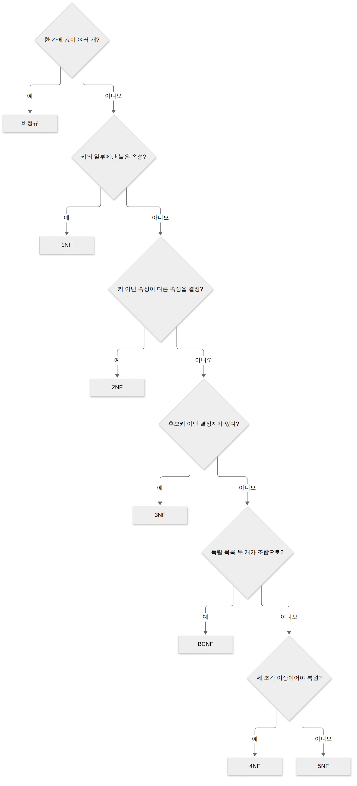

D051 · 3NF를 통과해도 남는 구멍 — BCNF·다치 종속(4NF)·조인 종속(5NF)과 정규형 손풀이
1부 (약 15분)
2부 (약 18분)
B3 어제 D050에서 길벗투어의 큰 표 한 장을 고객 · 투어 · 가이드 · 예약 네 장으로 쪼개 3NF까지 왔어요. 그러면 이제 끝일까요? 길벗투어가 새로 만든 가이드 배정표를 보면 아니에요. 3NF 검사를 깔끔하게 통과하는데도, 가이드의 담당 언어 하나를 바꾸려니 행을 여러 개 고쳐야 해요. 오늘은 3NF가 놓치는 구멍 세 가지 — 키가 아닌 결정자(BCNF), 서로 독립인 목록(다치 종속 · 4NF), 세 조각이어야만 맞는 퍼즐(조인 종속 · 5NF) — 을 차례로 막고, 마지막에 정규형 판정 손풀이로 1NF~5NF를 한 번에 꿰어요. 정규화 · 정규형은 최근 20회 시험에 20회 모두, 그중 BCNF는 15회 나왔어요.
- 3NF는 통과하지만 BCNF는 실패하는 표를 찾고, “모든 결정자가 후보키”가 되도록 분해해 3NF와 BCNF의 차이를 한 문장으로 말한다
- 다치 종속 X ↠ Y를 정의하고, 서로 독립인 두 목록이 한 표에 담긴 경우를 4NF로 분해한다
- 조인 종속을 정의하고, 후보키를 통하지 않는 조인 종속을 없애는 것이 5NF임을 4NF와 구별한다
- ‘원 · 부 · 이 · 결 · 다 · 조’ 사다리로 여섯 정규형의 조건을 짝짓고, 주어진 표가 지금 몇 정규형인지 · 다음에 무엇을 떼야 하는지 판정한다
- 정규화가 지나치면 조인이 늘어나는 비용을 설명하고, 그 반대 방향(반정규화)이 따로 있음을 안다
0. 오늘의 지도 — 3NF 다음 세 칸
어제까지의 정규화는 모두 함수 종속(X 값 하나에 Y 값이 하나로 정해짐)을 기준으로 했어요. 부분 종속을 떼면 2NF, 이행 종속을 떼면 3NF였죠. 오늘 첫 칸인 BCNF도 여전히 함수 종속 이야기예요. 3NF가 남겨 둔 마지막 예외 하나를 없애는 단계거든요. 그다음 두 칸은 결이 달라요. 4NF는 “값 하나”가 아니라 “값의 집합”이 붙는 다치 종속을, 5NF는 표를 여러 조각으로 나눴다가 다시 붙이는 성질인 조인 종속을 봐요. 그림 1처럼 살피는 종속의 범위가 점점 넓어진다고 생각하면 순서가 자연스럽게 외워져요.
사례는 어제와 같은 길벗투어예요. 가이드는 서하 · 도윤 · 민재 세 명이고, 오늘은 가이드가 맡는 언어 · 지역 · 상품 유형 · 숙소를 다루는 표 세 장이 나와요. 표마다 “이 표는 몇 정규형인가?”를 같이 따져 볼 거예요.
1. 장면 1 — 3NF를 통과해도 남는 구멍: BCNF 기출 15회
보이스-코드 정규형(BCNF)의 정의
정의: BCNF(Boyce–Codd Normal Form)는 표 안의 모든 결정자가 후보키인 정규형이에요. 다르게 말하면, 결정자이면서 후보키가 아닌 속성이 있으면 그 종속을 떼어 내야 BCNF가 돼요. 단, “자기 자신의 일부를 결정하는” 자명한 종속(예: {고객, 언어} → 언어)은 원래 아무 정보도 없으니 따지지 않아요. 같은 조건을 시험은 “자명하지 않은 모든 함수 종속 X → Y에서 X가 슈퍼키”라고도 써요. 슈퍼키는 후보키이거나 후보키를 품은 속성 집합이라, ‘결정자가 후보키’와 ‘결정자가 슈퍼키’는 같은 BCNF를 가리켜요. 보기에 두 표현이 섞여 나와도 당황하지 마세요. 1974년 보이스와 코드가 3NF를 더 엄격하게 다듬어 내놓았고, 3NF와 4NF 사이에 있어서 3.5NF라고도 불러요.
BCNF가 왜 따로 필요할까요? 어제 본 3NF 조건은 정확히 말하면 “키가 아닌 속성이 다른 키 아닌 속성을 결정하지 않는다”였어요. 이 문장에는 숨은 단서 조항이 있어요. 종속되는 쪽이 주속성(어떤 후보키에 속한 속성)이면 결정자가 후보키가 아니어도 봐준다는 거예요. 3NF는 ‘주속성이면 봐준다’는 단서 조항이 붙은 계약서인 셈이고, 출제자는 늘 그 단서 조항만 골라 읽어요. BCNF는 이 단서를 지우고 “결정자는 무조건 후보키”라고 못 박아요.
길벗투어 가이드 배정표 — 3NF ✓, BCNF ✕
길벗투어는 외국인 고객에게 언어별로 가이드를 배정해요. 업무 규칙은 두 개예요. 첫째, 한 고객은 언어마다 가이드를 한 명만 받는다(고객 · 언어 → 가이드). 둘째, 가이드는 한 언어만 담당한다(가이드 → 언어). 이 규칙을 그대로 담은 표가 guide_assign(customer_id, language, guide) 6행이에요. 서하는 영어 담당으로 고객 c1 · c2 · c3을, 도윤은 일본어 담당으로 c1 · c4를, 민재는 영어 담당으로 c5를 맡아요.
이 표의 후보키를 찾아볼게요. {고객, 언어}를 알면 가이드가 정해지니 후보키예요. 그런데 {고객, 가이드}를 알아도 가이드 → 언어로 언어가 정해지니 이것도 후보키예요. 후보키 두 개가 ‘고객’을 공유하며 겹쳐 있어서, 세 열이 모두 어떤 후보키에 속하는 주속성이 돼요. 그러니 부분 종속 · 이행 종속을 따질 ‘키가 아닌 속성’이 아예 없어 2NF · 3NF를 통과해요. 하지만 결정자 ‘가이드’는 혼자서 고객까지 정하지 못하니 후보키가 아니에요. 직원증은 없는데 출입문 비밀번호를 정해 주는 사람이 있는 꼴이라, BCNF 위반이에요. 이처럼 3NF인데 BCNF가 아닌 표는 후보키가 여럿이고 서로 겹칠 때에만 생겨요.
가이드 → 언어는 위반 0이라 성립하고, 언어 → 가이드는 영어에 가이드가 둘(서하 · 민재)이라 위반 1이에요. 화살표는 한 방향으로만 성립한다는 걸 숫자로 확인했어요. 성립하는 쪽의 결정자 ‘가이드’가 바로 문제의 주인공이에요.
BCNF 위반이 일으키는 이상 현상
결정자가 키가 아니면 어제 본 이상 현상 세 가지가 그대로 돌아와요. 원인은 하나 — “서하는 영어 담당”이라는 사실이 고객 수만큼 반복 저장된다는 점이에요.
| 이상 | 상황 | 증상 |
|---|---|---|
| 갱신 이상 | 서하의 담당 언어를 스페인어로 바꾸는데 c1 행만 고침 | 서하의 언어가 영어 · 스페인어 두 가지가 됨 |
| 삭제 이상 | 고객 c5의 배정을 취소해 민재 행을 지움 | “민재 = 영어 담당”이라는 사실까지 사라짐 |
| 삽입 이상 | 아직 고객이 없는 새 가이드 하준(중국어)을 등록 | 기본키 일부인 고객 칸이 비어 거부됨 |
그림 4. BCNF 위반 표의 이상 현상 세 가지. 모두 ‘가이드에 대한 사실’이 ‘배정 행’에 얹혀 있어서 생겨요.
서하만 언어수 2가 됐어요. 같은 가이드가 표 안에서 두 언어를 담당하는 모순이에요. 남은 두 행(c2 · c3)도 같이 고쳐야 하는데, 행이 많아질수록 빠뜨릴 확률도 커져요.
DB가 “customer_id에 NULL을 넣을 수 없다”며 거부해요. 기본키의 일부는 비울 수 없으니(개체 무결성), 가이드를 등록하려면 가짜 고객이라도 만들어야 하는 처지예요.
BCNF로 분해하기
정의: BCNF 분해는 후보키가 아닌 결정자와 그 종속자를 떼어 내 새 표를 만들고, 그 결정자를 새 표의 키로 삼는 작업이에요. 원래 표에는 결정자만 남겨 두 표를 잇는 다리로 써요. 길벗투어에서는 가이드 → 언어를 떼어 guide_lang(guide, language)(키: 가이드) 3행을 만들고, 원래 표에는 assign(customer_id, guide) 6행만 남겨요. 이제 “서하 = 영어”는 guide_lang에 딱 한 번 적혀요.
| 고객 | 언어 | 가이드 |
|---|---|---|
| c1 | 영어 | 서하 |
| c2 | 영어 | 서하 |
| c3 | 영어 | 서하 |
| … | (6행) |
① 출발점 guide_assign 6행. 서하 = 영어라는 사실이 세 번 적혀 있어요.
| 결정자 | 종속자 | 후보키인가? |
|---|---|---|
| 고객, 언어 | 가이드 | 예 |
| 가이드 | 언어 | 아니오 |
② 결정자를 모두 적고, 각각이 후보키인지 물어요. ‘가이드’는 고객을 정하지 못하니 후보키가 아니에요.
| 가이드 (키) | 언어 |
|---|---|
| 서하 | 영어 |
| 도윤 | 일본어 |
| 민재 | 영어 |
③ 문제의 종속 ‘가이드 → 언어’를 통째로 떼어 guide_lang 표를 만들어요. 가이드가 키라서 이제 결정자 = 후보키예요.
| 고객 | 가이드 |
|---|---|
| c1 | 서하 |
| c1 | 도윤 |
| … | (6행) |
④ 원래 표에는 고객과 가이드만 남긴 assign 6행. 두 표 모두 결정자가 후보키뿐이라 BCNF예요.
| 확인 | 결과 |
|---|---|
| assign ⋈ guide_lang | 6행 · 원본과 차이 0 |
| 잃은 것 | 고객 · 언어 → 가이드를 키로 못 지킴 |
⑤ 다시 조인하면 원본 6행이 그대로예요(무손실). 다만 한 가지 규칙을 키로 지킬 수 없게 됐는데, 아래 ‘BCNF의 대가’에서 봐요.
guide_lang 3행, assign 6행, 조인 6행, 차이 0이에요. 정보를 하나도 잃지 않고 쪼갰어요. 이제 서하의 언어를 바꿀 때는 guide_lang 한 행만 고치면 되고, 고객이 없는 하준도 guide_lang에 바로 등록돼요.
3NF와 BCNF는 정확히 어디서 갈리나
두 정규형은 “결정자가 후보키가 아닌 함수 종속”을 어떻게 대하느냐로 갈려요. 3NF는 그 종속의 오른쪽(종속자)이 주속성이면 허용하고, BCNF는 예외 없이 막아요. 그래서 BCNF이면 언제나 3NF이지만, 거꾸로는 성립하지 않아요. 실제로 차이가 나는 경우는 앞에서 본 것처럼 겹치는 후보키가 있을 때뿐이라, 후보키가 하나인 표는 3NF면 곧 BCNF예요.
| 구분 | 3NF | BCNF |
|---|---|---|
| 조건 한 줄 | 키 아닌 속성 사이에 이행 종속이 없다 | 모든 결정자가 후보키다 |
| 결정자가 후보키 아님 + 종속자가 주속성 | 허용 (단서 조항) | 위반 → 분해 |
| 관계 | BCNF ⊂ 3NF (BCNF면 반드시 3NF) | |
| 차이가 나는 표 | 후보키가 여러 개이고 서로 겹칠 때만 | |
| 오늘 사례 | guide_assign 통과 | guide_assign 실패 → guide_lang + assign |
그림 13. 3NF와 BCNF의 차이. 시험에서는 이 표의 둘째 줄이 그대로 정답 문장이 돼요.
BCNF의 대가 — 종속 보존이 깨질 수 있다 책 밖 보충
BCNF 분해가 늘 공짜는 아니에요. 쪼개기 전에는 기본키 {고객, 언어}가 “한 고객은 언어마다 가이드 한 명”을 자동으로 지켜 줬어요. 그런데 쪼갠 뒤에는 고객과 언어가 서로 다른 표에 있어서, 이 규칙을 지켜 줄 키가 어디에도 없어요. 이렇게 원래의 함수 종속을 분해된 표의 키만으로 지킬 수 없게 되는 것을 종속 보존 실패라고 해요. 이론적으로도 어떤 표는 종속을 보존하면서 BCNF로 분해하는 방법이 아예 없다고 알려져 있어요(Beeri–Bernstein, 1979). 그래서 실무에서는 이런 표를 일부러 3NF에서 멈추고 트리거나 검사 로직으로 보완하기도 해요.
INSERT는 아무 문제 없이 들어가고, c1 · 영어에 가이드가 2명인 행이 나와요. 분해 전 guide_assign이었다면 기본키 (c1, 영어) 중복으로 거부됐을 입력이에요. 시험에는 이 내용이 직접 나오진 않지만, “BCNF가 3NF보다 항상 좋다”고 단정하면 안 되는 이유로 알아 두세요.
결과물 → 함수 종속에서 나올 수 있는 중복은 BCNF로 모두 사라졌어요. 그런데 결정자가 하나도 없는 표에도 중복이 생길 수 있을까요? 다음 장면의 guide_skill 표가 그 경우예요.
2. 장면 2 — 독립적인 목록 둘이 한 표에: 다치 종속과 4NF
다치 종속(MVD, X ↠ Y)의 정의
정의: 다치 종속(Multi-Valued Dependency)은 X 값 하나에 Y 값들의 집합이 대응하는데, 그 집합이 표의 나머지 속성 Z와 무관하게 독립적으로 붙어 있는 관계예요. 표기는 X ↠ Y(이중 화살표)이고 “X가 Y를 다중 결정한다”고 읽어요. 함수 종속이 “X를 알면 Y가 하나로 정해진다”였다면, 다치 종속은 “X를 알면 Y의 목록이 정해지고, 그 목록이 Z 목록과 모든 조합으로 행에 나타나야 한다”는 규칙이에요.
형식적으로 말하면 이래요. 같은 X 값을 가진 두 행 (x, y1, z1)과 (x, y2, z2)가 있으면, Y와 Z를 맞바꾼 (x, y1, z2)와 (x, y2, z1)도 반드시 표에 있어야 해요. 그래서 다치 종속이 있는 표는 Y 개수 × Z 개수만큼 행이 생겨요. 뷔페 영수증에 메인 요리 3가지 × 음료 3가지를 접시마다 세트로 모두 적어 둔 꼴이라, 음료 하나를 추가하면 영수증이 세 장 더 늘어나요.
길벗투어 가이드 역량표 — BCNF ✓, 4NF ✕
길벗투어는 가이드마다 구사 언어 목록과 담당 지역 목록을 관리해요. 두 목록은 서로 상관이 없어요. 서하는 영어로도 중국어로도 제주 · 부산 · 강릉 어디든 안내해요. 이걸 한 표 guide_skill(guide, language, region)에 담으면 서하만 3 × 3 = 9행, 도윤 2 × 2 = 4행, 민재 1행으로 모두 14행이에요. 어떤 열도 다른 열을 하나로 정하지 못하니 결정자가 없고, 후보키는 세 열 전체예요. 결정자가 없으니 BCNF까지 통과해요. 그런데 그림 5처럼 서하에게 프랑스어 하나를 추가하려면 지역 수만큼 3행을 넣어야 하고, 하나라도 빠뜨리면 “언어와 지역은 모든 조합”이라는 규칙이 깨져요.
도윤 4 · 4, 민재 1 · 1, 서하 9 · 9로 모두 같아요. 행 수가 정확히 곱과 같다는 건 모든 조합이 다 있다는 뜻이고, 이게 다치 종속 가이드 ↠ 언어, 가이드 ↠ 지역이 표에 드러난 모양이에요.
‘독립’이 핵심 — 다치 종속이 아닌 경우
여러 값이 붙는다고 다 다치 종속은 아니에요. 만약 도윤이 영어로는 제주만, 일본어로는 부산만 안내한다면, 언어와 지역이 서로 엮인 의미 있는 쌍이에요. 이때 (도윤, 영어, 제주)와 (도윤, 일본어, 부산) 두 행은 각각 별개의 사실이라 지우거나 합칠 중복이 없고, 표는 그대로 4NF예요. 다치 종속을 판단할 때는 “두 목록이 정말 서로 무관한가?”라는 업무 규칙을 먼저 물어야 해요. 데이터만 보고는 우연히 조합이 다 찬 건지 규칙인지 알 수 없거든요.
함수 종속과의 관계도 알아 두면 시험 선지를 가르기 쉬워요. X → Y가 성립하면 X ↠ Y도 성립해요. Y 값이 하나뿐인 집합이라고 보면 되니까요. 즉 함수 종속은 다치 종속의 특수한 경우예요. 또 X ↠ Y가 있으면 나머지 속성에 대해서도 X ↠ Z가 함께 성립해요(보완 규칙). guide_skill에서 가이드 ↠ 언어와 가이드 ↠ 지역이 늘 짝으로 나오는 이유예요. Y가 X의 일부이거나 X와 Y를 합치면 전체 열이 되는 다치 종속은 아무것도 말해 주지 않는 자명한 다치 종속이라 따지지 않아요. 책 밖 보충
| 구분 | 함수 종속(FD) | 다치 종속(MVD) |
|---|---|---|
| 표기 | X → Y | X ↠ Y |
| X 하나에 붙는 Y | 값 하나 | 값의 집합(다른 목록과 독립) |
| 표가 지켜야 할 것 | 같은 X면 같은 Y | 같은 X면 Y × Z 모든 조합 행이 존재 |
| 관계 | FD가 성립하면 MVD도 성립 (FD는 MVD의 특수한 경우) | |
| 없애면 | 2NF · 3NF · BCNF | 4NF |
그림 7. 함수 종속과 다치 종속 비교. 2NF~BCNF는 함수 종속, 4NF는 다치 종속을 기준으로 해요.
제4정규형(4NF)의 정의와 분해
정의: 4NF는 BCNF를 만족하면서, 자명하지 않은 다치 종속이 없는(있다면 그 결정자 X가 슈퍼키인) 정규형이에요. 1977년 페이긴(Fagin)이 정의했어요. 분해 방법은 단순해요. X ↠ Y가 있으면 표를 (X, Y)와 (X, 나머지)로 나눠요. 이 분해는 언제나 무손실이에요 — 다치 종속이 성립한다는 것 자체가 “둘로 나눴다가 X로 다시 붙이면 원래와 같다”는 뜻이거든요.
언어표 6행, 지역표 6행, 조인 14행, 차이 0이에요. 행 수로는 14에서 12, 칸 수로는 42칸(14행 × 3열)에서 24칸(12행 × 2열)으로 줄었어요. 진짜 효과는 다음 상자에서 보여요.
INSERT 한 줄로 조합 3개(제주 · 부산 · 강릉)가 저절로 생겨요. 분해 전에는 3행을 직접 넣어야 했고 하나만 빠뜨려도 규칙이 깨졌죠. 4NF는 이렇게 “빠뜨릴 수 있는 자리”를 구조로 없애요. 연구에 따르면 실제 기업 DB에서도 4NF 위반 표가 드물지 않게 발견된다고 하니, “가이드의 자격 · 언어 · 지역” 같은 목록을 한 표에 몰아넣고 싶을 때 떠올려 보세요.
결과물 → 둘로 쪼개서 맞는 표는 4NF로 정리했어요. 그럼 둘로 쪼개면 안 맞고 셋으로 쪼개야만 맞는 표는요? 그게 조인 종속이에요.
3. 장면 3 — 세 조각이어야만 맞춰지는 표: 조인 종속과 5NF
조인 종속(JD)의 정의
정의: 조인 종속(Join Dependency)은 표를 둘 이상의 부분 표(투영)로 쪼갠 뒤 다시 자연 조인하면 정확히 원래 표가 복원되는 성질이에요. 원래 없던 행이 생기지도, 있던 행이 사라지지도 않아야 해요. 앞 장면의 다치 종속은 사실 “두 조각으로 쪼개도 복원된다”는 조인 종속의 특수한 경우예요. 오늘 새로 보는 건 두 조각으로는 안 되고 세 조각 이상이어야 복원되는 경우예요.
길벗투어 상품 편성표 — 4NF ✓, 5NF ✕
길벗투어에는 이런 편성 규칙이 있어요. “가이드가 어떤 상품 유형을 운영하고, 그 가이드가 어떤 숙소와 계약했고, 그 숙소가 그 유형을 제공하면, 그 가이드는 반드시 그 조합을 판매한다.” 이 규칙으로 만들어진 표가 offer(guide, tour_type, lodge) 4행이에요. 서하는 트레킹 · A숙소, 트레킹 · B숙소, 야경 · A숙소를, 도윤은 트레킹 · A숙소를 팔아요.
먼저 다치 종속이 있는지 볼게요. 서하의 유형은 2개(트레킹 · 야경), 숙소도 2개(A · B)인데 행은 3개예요. 모든 조합(2 × 2 = 4)이 다 있지 않으니 가이드 ↠ 유형은 성립하지 않고, 다른 열을 기준으로 봐도 마찬가지예요. 결정자도 없으니 이 표는 4NF예요. 그런데도 같은 사실이 여러 행에 흩어져 있어요. “서하가 트레킹을 운영한다”는 사실이 두 행에, “A숙소가 트레킹을 제공한다”는 사실이 두 행에 겹쳐 있죠.
도윤은 1 · 1이지만 서하는 3 · 4로 달라요. 서하 · 야경 · B숙소 조합이 없으니 다치 종속이 아니에요. 그럼 offer를 쪼갤 방법은 없을까요? 퍼즐을 세 조각으로 나누지 않으면 맞출 때 엉뚱한 그림이 나오는 경우가 있는데, offer가 바로 그래요.
두 조각 조인은 5행이고, 원본에 없는 서하 · 야경 · B숙소가 끼어들었어요. 정말 판매하지 않는 상품이 생긴 거예요. 다른 두 조각 조합으로 붙여도 결과는 비슷해요. 이 표는 어떤 두 조각으로도 무손실 분해가 안 된다는 뜻이고, 그래서 다치 종속(두 조각 조인 종속)이 없었던 거예요.
세 조각을 모두 붙이면 4행, 차이 0이에요. 세 번째 조각 type_lodge에는 “야경 · B숙소”가 없어서 가짜 행을 걸러 내는 체 역할을 해요. 이처럼 세 조각으로 쪼개야만 복원되는 조인 종속이 offer에 숨어 있었어요. 이 조인 종속의 조각들(가이드–유형, 가이드–숙소, 유형–숙소)은 어느 것도 offer의 후보키(세 열 전체)를 포함하지 않아요. 이게 바로 “후보키를 통하지 않는 조인 종속”이에요.
| 가이드 | 유형 | 숙소 |
|---|---|---|
| 서하 | 트레킹 | A숙소 |
| 서하 | 트레킹 | B숙소 |
| 서하 | 야경 | A숙소 |
| 도윤 | 트레킹 | A숙소 |
① 원본 offer 4행. 결정자도 다치 종속도 없어서 4NF예요.
| 조각 | 행 |
|---|---|
| 가이드–유형 | 서하 트레킹 · 서하 야경 · 도윤 트레킹 |
| 가이드–숙소 | 서하 A · 서하 B · 도윤 A |
| 유형–숙소 | 트레킹 A · 트레킹 B · 야경 A |
② 두 열씩 세 조각으로 나눠요. 조각마다 3행이에요.
| 가이드 | 유형 | 숙소 |
|---|---|---|
| 서하 | 트레킹 | A숙소 |
| 서하 | 트레킹 | B숙소 |
| 서하 | 야경 | A숙소 |
| 서하 | 야경 | B숙소 |
| 도윤 | 트레킹 | A숙소 |
③ 앞 두 조각만 가이드로 조인하면 5행. 주황 줄은 원본에 없던 가짜 행이에요.
| 걸러 내기 | 결과 |
|---|---|
| 유형–숙소에 ‘야경 · B숙소’가 있나? | 없음 → 가짜 행 탈락 |
④ 세 번째 조각과 맞춰 보면, 야경을 B숙소가 제공한다는 사실이 없으니 가짜 행이 떨어져 나가요.
| 확인 | 결과 |
|---|---|
| 세 조각 조인 | 4행 = 원본 |
| 결론 | 후보키를 통하지 않는 조인 종속 → 5NF로 분해 |
⑤ 세 조각이어야만 정확히 복원돼요. 5NF는 offer를 이 세 표로 나눈 상태예요.
제5정규형(5NF)의 정의
정의: 5NF는 4NF를 만족하면서, 후보키를 통하지 않는 조인 종속이 없는 정규형이에요. 같은 뜻을 시험은 “표의 모든 조인 종속이 후보키를 통해서만 성립한다”라는 문장으로도 물어요. 두 문장 모두 “후보키를 품지 않는 조각들로만 복원되는 구조가 남아 있으면 그 조각들로 쪼갠다”는 말이에요. 투영(Projection)과 조인(Join)으로 정의되어 PJ/NF라고도 하고, 1979년 페이긴이 정의했어요. 중복 제거를 목표로 하는 정규형 중에서는 마지막 단계예요.
5NF로 쪼개면 새 사실을 넣을 때도 편해져요. 예를 들어 B숙소가 야경 상품도 제공하기 시작하면 type_lodge에 한 행만 넣으면 되고, 규칙에 따라 서하 · 야경 · B숙소가 조인 결과에 저절로 생겨요. 원래 offer였다면 그 조합을 사람이 찾아서 직접 넣어야 했겠죠. 다만 이런 순환 규칙(가이드–유형–숙소가 서로 맞물리는 규칙)은 현실에서 드물어요. 그래서 수험서도 4 · 5정규형은 특수한 경우에만 필요하다고 적고, 4NF 표가 5NF가 아닌 경우도 드물다고 알려져 있어요.
| 판별 질문 | 4NF로 해결 | 5NF로 해결 |
|---|---|---|
| 무엇을 없애나 | 다치 종속 | 후보키를 통하지 않는 조인 종속 |
| 몇 조각으로 쪼개나 | 2조각 (X, Y) · (X, Z) | 3조각 이상 |
| 행 수의 신호 | 행 수 = 목록 길이의 곱 | 곱보다 적음 · 두 조각 조인에 가짜 행 |
| 오늘 사례 | guide_skill (언어 × 지역) | offer (가이드 · 유형 · 숙소 순환 규칙) |
그림 9. 4NF와 5NF 판별. “두 조각으로 맞느냐, 세 조각이어야 맞느냐”가 가르는 질문이에요.
그럼 6NF도 있을까요? 이론상으로는 있어요. 하지만 6NF는 중복 제거가 목적이 아니라 시간에 따라 바뀌는 값을 다루려고 따로 만든 형태라, 일반 정규화 사다리의 다음 칸이 아니에요 책 밖 보충. 시험에서 “제6정규형”은 5NF를 묻는 문제의 가짜 선지로만 나와요.
결과물 → 이제 정규형 여섯 칸이 다 나왔어요. 다음 장면에서 한 장의 사다리로 묶고, 표를 보고 몇 정규형인지 판정하는 연습을 해요.
4. 장면 4 — 정규형 사다리와 손풀이 기출 20회
정규형 사다리 — 단계는 누적이다
정의: 정규형은 표가 만족하는 조건의 수준이고, 위 단계는 아래 단계의 조건을 모두 포함한 채 조건을 하나 더 얹은 계단이에요. 그래서 5NF 표는 4NF · BCNF · 3NF · 2NF · 1NF를 모두 만족해요. 기출에서 “정규화는 차수가 높아질수록 만족해야 할 제약 조건이 늘어난다”가 옳은 설명으로 나오는 것도 이 때문이에요. 각 계단에서 떼어 내는 것의 앞 글자를 모으면 원 · 부 · 이 · 결 · 다 · 조예요.
| 칸 | 떼어 내는 것 | 사례 |
|---|---|---|
| 1NF | 한 칸의 여러 값 → 원자값 | D050 예약메모 |
① 원(원자값). 한 칸에 투어 번호를 쉼표로 여럿 적던 메모를 한 쌍씩 행으로 풀었어요.
| 칸 | 떼어 내는 것 | 사례 |
|---|---|---|
| 2NF | 부분 함수 종속 | D050 고객 · 투어 분리 |
② 부(부분 종속). 키의 일부에만 붙은 고객명 · 투어 정보를 각자 표로 보냈어요.
| 칸 | 떼어 내는 것 | 사례 |
|---|---|---|
| 3NF | 이행 함수 종속 | D050 가이드 표 분리 |
③ 이(이행 종속). 투어 → 가이드 → 연락처 사슬을 끊었어요.
| 칸 | 떼어 내는 것 | 사례 |
|---|---|---|
| BCNF | 후보키가 아닌 결정자 | guide_assign → guide_lang |
④ 결(결정자). 가이드 → 언어처럼 키가 아닌 결정자를 키로 둔 표로 뗐어요.
| 칸 | 떼어 내는 것 | 사례 |
|---|---|---|
| 4NF | 다치 종속 | guide_skill → 언어표 · 지역표 |
⑤ 다(다치 종속). 서로 독립인 두 목록을 각자 표로 나눴어요.
| 칸 | 떼어 내는 것 | 사례 |
|---|---|---|
| 5NF | 후보키를 통하지 않는 조인 종속 | offer → 세 조각 |
⑥ 조(조인 종속). 세 조각이어야만 복원되는 표를 세 조각으로 나눴어요.
| 한 줄 정리 |
|---|
| 원 · 부 · 이 · 결 · 다 · 조 — 위 칸은 아래 칸을 모두 포함 |
⑦ 여섯 칸 완주. 시험에서 “A에서 B가 되려면?”을 물으면 B 칸에 적힌 것이 정답이에요.
판정 순서 — 아래층부터 올라가다 처음 막히는 층
표 하나를 받고 “몇 정규형인가?”를 판정할 때는 엘리베이터를 1층부터 누르듯 아래 조건부터 차례로 확인해요. 처음 막히는 층이 나오면, 그 바로 아래가 지금의 정규형이에요. 그리고 막힌 이유가 곧 다음 단계로 가기 위해 떼어 낼 것이에요. 그림 11이 그 질문 순서예요.

손풀이 — 이 표는 몇 정규형?
아래 다섯 표를 그림 11의 순서로 판정해 보세요. 각 표 아래 ‘내 판정 확인’을 열면 풀이가 있어요(확인 문제가 아니라 연습이에요). 앞의 둘은 어제 범위 복습, 뒤의 셋은 오늘 장면의 표예요.
| # | 표 | 키 | 업무 규칙(종속) |
|---|---|---|---|
| ① | review(customer_id, tour_id, customer_name, rating) | {고객, 투어} | 고객 → 고객명, {고객, 투어} → 평점 |
| ② | tour_guide(tour_id, guide, guide_phone) | 투어 | 투어 → 가이드, 가이드 → 연락처 |
| ③ | guide_assign(customer_id, language, guide) | {고객, 언어}, {고객, 가이드} | 고객 · 언어 → 가이드, 가이드 → 언어 |
| ④ | guide_skill(guide, language, region) | 세 열 전체 | 가이드 ↠ 언어, 가이드 ↠ 지역(서로 독립) |
| ⑤ | offer(guide, tour_type, lodge) | 세 열 전체 | 가이드–유형–숙소 순환 규칙(세 조각 조인 종속) |
그림 12. 손풀이 다섯 표. 키와 업무 규칙만 보고 정규형을 판정해 보세요.
① review — 내 판정 확인
원자값 ✓. 그런데 고객명은 키의 일부인 고객에만 종속돼요(부분 종속) → 2층에서 막힘 → 1NF. 2NF로 가려면 customer(고객, 고객명)를 떼요.
② tour_guide — 내 판정 확인
키가 투어 하나라 부분 종속은 생길 수 없어요 ✓. 그런데 키가 아닌 가이드가 연락처를 결정해요(이행 종속) → 3층에서 막힘 → 2NF. 3NF로 가려면 guide(가이드, 연락처)를 떼요.
③ guide_assign — 내 판정 확인
모든 열이 주속성이라 부분 · 이행 종속 검사를 통과 ✓. 하지만 결정자 가이드가 후보키가 아님 → 4층에서 막힘 → 3NF. BCNF로 가려면 guide_lang(가이드, 언어)을 떼요.
④ guide_skill — 내 판정 확인
결정자가 없어 BCNF까지 ✓. 서로 독립인 두 목록이 모든 조합으로 들어 있음(다치 종속) → 5층에서 막힘 → BCNF. 4NF로 가려면 언어표 · 지역표로 나눠요.
⑤ offer — 내 판정 확인
다치 종속 없음 ✓(행 수가 조합 수보다 적음). 하지만 세 조각이어야만 복원되는 조인 종속이 있음 → 6층에서 막힘 → 4NF. 5NF로 가려면 가이드–유형 · 가이드–숙소 · 유형–숙소 세 표로 나눠요.
다섯 표의 답을 이어 보면 1NF → 2NF → 3NF → BCNF → 4NF로 한 칸씩 올라가요. 기출의 “다음 단계가 되기 위한 조건” 문제는 이 연습에서 ‘떼어 낼 것’ 칸을 그대로 묻는 거예요.
5. 장면 5 — 정규화는 공짜가 아니다
정규화를 끝까지 하면 무조건 좋을까요? 오늘 하루에만 표 세 장이 일곱 장(guide_lang · assign · guide_language · guide_region · guide_type · guide_lodge · type_lodge)으로 늘었어요. 중복과 이상 현상은 줄었지만, “c1 고객의 영어 가이드 연락처”를 보려면 이제 세 표를 조인해야 해요. 6층 건물에 엘리베이터를 다섯 대 달면 안전하긴 해도 관리비와 대기 줄이 늘어나는 것과 같아요. 정규화의 비용은 결국 조회 때 늘어나는 조인이에요.
그래서 현업에서는 보통 3NF(또는 BCNF)까지 하고, 4NF · 5NF는 “두 목록이 정말 독립인가”, “순환 규칙이 정말 있는가” 같은 업무 규칙을 확인한 뒤에만 적용해요. 반대로 조인 부담이 너무 커지면 일부러 중복을 되살리는 반정규화를 고민하는데, 이건 정규화의 목적(중복 제거)과 정반대 방향의 선택이라 12/3 D059에서 따로 다뤄요. 시험에서는 정규형마다의 정의와 조건 짝을, 현업에서는 “어디서 멈출지”를 묻는다고 기억하면 돼요.
오늘 장면에서 설명한 짝을 질문 하나씩으로 갈랐어요.
| 헷갈리는 짝 | 가르는 질문 | 예 → / 아니오 → |
|---|---|---|
| 3NF vs BCNF | 후보키가 아닌 결정자를 종속자가 주속성이라는 이유로 봐주나? | 3NF / BCNF는 예외 없음 |
| 이행 종속 vs 결정자 조건 | 키 아닌 속성끼리의 사슬인가, 후보키 아닌 결정자 전반인가? | 이행 = 3NF / 결정자 = BCNF |
| 함수 종속 vs 다치 종속 | X 하나에 Y가 값 하나인가, 독립 목록인가? | FD(→) / MVD(↠) |
| BCNF vs 4NF | 결정자 문제인가, 독립 목록의 조합 문제인가? | BCNF / 4NF |
| 4NF vs 5NF | 두 조각으로 복원되나, 세 조각 이상이어야 되나? | 4NF(다치) / 5NF(조인) |
| 다치 종속 vs 조인 종속 | 행 수가 목록 길이의 곱과 같은가? | 다치 종속 / 아니면 조인 종속 후보 |
| 5NF vs 6NF | 중복 제거를 위한 정규화 사다리의 칸인가? | 5NF가 마지막 / 6NF는 가짜 선지 |
| 정규화 vs 반정규화 | 중복을 줄이나, 성능을 위해 중복을 두나? | 정규화 / 반정규화(D059) |
지난번 헷갈렸던 개념 다시 한 번
확인 문제 5~9번은 오늘 범위(정규화)와 상관없는, 예전에 틀렸던 개념의 재확인이에요. 원래 문제와 문장 · 보기 순서를 바꿨어요. 4번은 3주 넘게 지난 1과목 범위의 누적 문제예요.
| 개념 | 헷갈린 짝 | 가르는 질문 |
|---|---|---|
| 참조 무결성 | 개체 무결성 | 외래키가 다른 표에 없는 값을 가리키나(참조), 기본키가 비거나 중복되나(개체)? 지문 끝까지 읽기 |
| 팬인 · 팬아웃 | 방향 뒤바뀜 | X → Y는 X가 Y를 호출. 나를 부르는 모듈 수 = 팬인, 내가 부르는 모듈 수 = 팬아웃 |
| McCabe 순환 복잡도 | 조건 수 그대로 | 단일 조건(if · while · for) 개수에 +1을 했나? |
| 형상 감사 | 형상 통제 | 반영 전 변경 요청을 승인 · 조정하나(통제), 반영 후 승인대로 됐는지 검사하나(감사)? |
| 삽입 정렬 최선 O(n) | 선택 정렬 | 이미 정렬된 입력에서 비교가 확 줄어드나? 선택 정렬은 입력과 상관없이 비교 n(n−1)/2번 |
참고: 수제비 2027 기본서의 데이터베이스 정규화 해설 범위(BCNF · 4NF · 5NF와 다치 · 조인 종속)를 확인하고, Boyce–Codd normal form · Fourth normal form · Fifth normal form · Multivalued dependency 위키 문서와 대조해 내 말과 길벗투어 사례로 새로 썼어요. BCNF의 종속 보존 한계, 다치 종속의 형식 정의 · 자명한 다치 종속, 6NF는 책 밖 보충이에요. 실행 상자 결과는 브라우저 안 PostgreSQL(PGlite) 기준이에요.
확인 문제
1~3번은 오늘 범위, 4번은 지난 범위 누적, 5~9번은 지난 오답 재확인이에요.
- 여행사 DB의 배정(고객번호, 언어, 가이드) 릴레이션에서 ‘고객번호 · 언어 → 가이드’와 ‘가이드 → 언어’가 성립한다. 이 릴레이션은 제3정규형은 만족하지만 BCNF는 만족하지 못한다. BCNF로 정규화하려면 무엇을 제거해야 하는가?
- 한 가이드에 ‘구사 언어’ 목록과 ‘담당 지역’ 목록이 서로 무관하게 붙어 있어, 두 목록의 모든 조합이 행으로 저장된 릴레이션이 있다. 이 릴레이션이 BCNF까지 만족할 때, 다음 정규형으로 가기 위해 제거해야 하는 것은?
- 두 개의 투영으로 분해해 조인하면 원래 없던 튜플이 생기고, 세 개의 투영으로 분해해야만 원래 릴레이션이 복원되는 경우가 있다. 이런 구조까지 정리하여 ‘모든 조인 종속이 후보키를 통해서만 성립하는’ 조건을 만족한 릴레이션의 정규형은?
- 나선형(Spiral) 모형에서 한 바퀴를 도는 동안 수행하는 활동의 순서로 옳은 것은?
- 상품 테이블의 외래키 ‘카테고리번호’에 카테고리 테이블에는 존재하지 않는 값 777을 넣은 행을 삽입하려 하자 DBMS가 거부했다. 이 거부의 근거가 되는 제약은?
- 모듈 호출 관계가 P → Q, P → R, Q → S, Q → T, R → S일 때(X → Y는 X가 Y를 호출한다는 뜻), 모듈 S의 팬인(fan-in)과 팬아웃(fan-out)은?
- 어떤 프로그램의 제어 흐름에 단일 조건으로 된 if문 2개, while문 1개, for문 1개가 있다. McCabe 순환 복잡도 V(G)는?
- 승인을 거쳐 베이스라인에 반영된 변경이 승인된 내용 그대로 정확히 이루어졌는지를 사후에 검사 · 확인하는 형상 관리 활동은?
- 팀원들이 정렬 알고리즘의 성질을 메모해 두었다. 잘못 적은 메모는?
고른 뒤 답안 복사 → 디스코드 공부 채널에 붙여넣기 하면 돼요.
답장: 정처기 D051: 1)번호 2)번호 3)번호 4)번호 5)번호 6)번호 7)번호 8)번호 9)번호